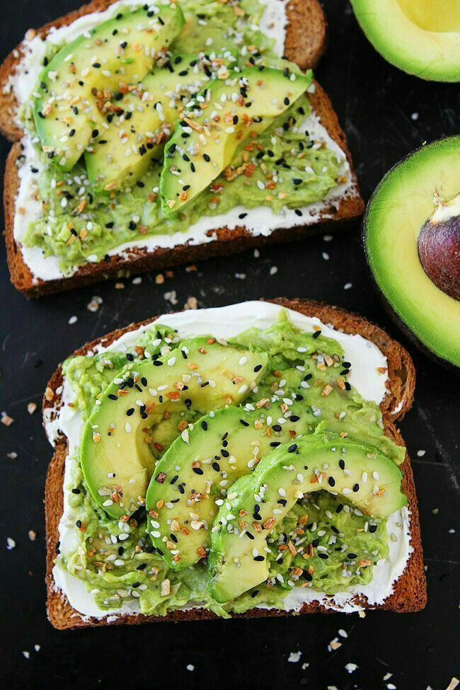

Rețete sănătoase - Doza de Sănătate
 Menu Sănătate All Sănătate Anatomie și fiziologie Boli Medicamente Tratamente Remedii naturale All Remedii naturale Alte tratamente Îngrijirea corpului Îngrijirea părului Naturopatie Plante medicinale Terapii naturale Tratamente faciale Bunăstare All Bunăstare Exerciții și sport Frumusețe și îngrijire Minte sănătoasă Obiceiuri benefice Dietă All Dietă Diete pentru detoxifiere Diete sănătoase Nutriție Pierdere în greutate Rețete All Rețete Aperitive și feluri principale Desert Infuzii Rețete sănătoase Sucuri și smoothie Maternitate All Maternitate Copii Dragoste All Dragoste Relații Sex Stil de viață All Stil de viață Grădină și spații exterioare Sfaturi pentru locuință Știai că? Cine suntem • POLITICA DE CONFIDENȚIALITATE • Termeni și condiții de utilizare • LEGEA COOKIE-URILOR Sănătate Anatomie și fiziologie Boli Medicamente Tratamente Remedii naturale Alte tratamente Îngrijirea corpului Îngrijirea părului Naturopatie Plante medicinale Terapii naturale Tratamente faciale Bunăstare Exerciții și sport Frumusețe și îngrijire Minte sănătoasă Obiceiuri benefice Dietă Diete pentru detoxifiere Diete sănătoase Nutriție Pierdere în greutate Rețete Aperitive și feluri principale Desert Infuzii Rețete sănătoase Sucuri și smoothie Maternitate Copii Dragoste Relații Sex Stil de viață Grădină și spații exterioare Sfaturi pentru locuință Știai că?
Rețete sănătoase
Aici vei găsi totul: rețete delicioase și sănătoase, unice și minunate. Tu și familia ta veți iubi aceste idei nutritive și echilibrate. Așadar înarmează-te cu pix și hârtie și răsfață-te cu aceste uimitoare rețete. Succesul este garantat.
Rețete sănătoase Încearcă un smoothie bowl la micul dejun!Ce este un smoothie bowl și de ce ar trebui să-l consumi la micul dejun? Un smoothie bowl este un…
Rețete sănătoase Supă cremă de legume pentru imunitateVrei să încerci trei rețete delicioase de supă cremă de legume pentru imunitate? Când vine vorba de adoptarea unei diete…
Rețete sănătoase Ceai de rhodiola și ovăz pentru energieNu trebuie să fiți sportivi pentru a avea nevoie de mai multă energie în viața de zi cu zi. În…
Rețete sănătoase Cremă de varză furajeră și spanac: o doză de vitamineVarza furajeră este o legumă la modă datorită faptului că se cultivă ușor, are o versatilitate crescută în bucătărie și…
Rețete sănătoase Rețete sănătoase cu avocado coptAvocado este un fruct bogat în vitamine, minerale, acizi grași esențiali, proteine și fibre. Deoarece este foarte bogat în nutrienți,…
Rețete sănătoase 5 rețete de dressing pentru salată cu puține caloriiVrei să descoperi cum se prepară un dressing pentru salată cu puține calorii? Salatele sunt preparate sănătoase, atât timp cât…
Rețete sănătoase Rețete delicioase de maioneză de casăAceste rețete delicioase de maioneză de casă sunt ușor de preparat și conțin ingrediente mult mai sănătoase decât majoritatea maionezei…
Rețete sănătoase Rețete delicioase de brânză veganăDatorită popularității în creștere a dietelor vegane și vegetariene, multe persoane caută acum rețete delicioase de brânză vegană. Chiar dacă…
Rețete sănătoase Rețetă de pâine din secară și grâu speltaPâinea din grâu este un aliment de bază în multe culturi. Cu toate acestea, mulți au început să o evite,…
Rețete sănătoase 6 rețete cu legume pentru copii mofturoșiLegumele și frunzele verzi sunt surse extraordinare de nutrienți pentru copilul tău. Însă știm cu toții că cei mici refuză…
Rețete sănătoase Supă de ceapă și usturoi, o rețetă pentru imunitateO supă de ceapă și usturoi este o rețetă perfectă pentru întărirea sistemului imunitar. Atât ceapa, cât și usturoiul sunt…
Rețete sănătoase Terci de ovăz pentru micul dejun: 10 rețete sănătoaseTerciul de ovăz este cunoscut în limba engleză sub denumirea de „porridge” și este foarte simplu de preparat. Trebuie doar…
Rețete sănătoase Descoperă două rețete cu piept de puiPuiul are mai multe părți care sunt comestibile și care pot fi utilizate în numeroase rețete. Pieptul de pui este…
Rețete sănătoase Chipsuri din legume: 3 rețete simple și delicioaseSecretul din spatele rețetelor de chipsuri din legume constă în alegerea legumei și a condimentelor. Cu toate că sunt foarte…
Rețete sănătoase Salate de leguminoase: 4 rețete delicioaseÎn general, leguminoasele sunt asociate cu feluri de mâncare consumate în anotimpul rece, fiindcă acestea sunt utilizate, de exemplu, la…
Rețete sănătoase Rețetă delicioasă de pui cu legumeAceastă rețetă delicioasă de pui cu legume este benefică pentru organism, deoarece carnea este bogată în proteine, iar legumele au…
Rețete sănătoase Învață cum să prepari vinete paneExistă multe modalități de a prepara vinete. Dacă îți place această legumă, citește în continuare. În cele ce urmează, îți…
Rețete sănătoase Cum să prepari conopidă gratinată în sos BechamelMulte persoane nu folosesc niciodată conopida ca ingredient principal într-o rețetă. Chiar mai puține îndrăznesc să prepare un sos pentru…
Rețete sănătoase Descoperă 3 metode de marinare a cărniiDe ceva timp, oamenii au dezvoltat arta culinară și au descoperit diverse modalități de a prepara nenumărate feluri de mâncare.…
Rețete sănătoase 3 rețete cu banane plantain simple și originaleBananele plantain sunt, fără nici un dubiu, un ingredient de bază în numeroase rețete tradiționale străine. În special în Statele…
Load more... Articole interesante Familie Care sunt consecințele certurilor în fața copiilor?Consecințele certurilor în fața copiilor sunt dezastruoase. Conflictele dintre părinți le creează celor mici sentimentul de nesiguranță, drept pentru care…
Nutriție Proprietăți și beneficii ale pectineiPectina este o fibră vegetală conținută de fructe care, atunci când este combinată cu apa, formează un gel. Aceasta funcționează…
Stil de viață 10 plante care atrag energiile pozitivePlantele sunt de mult timp folosite pentru decorarea spațiilor din locuințe sau din birouri. Pe lângă faptul că oferă o…
Rețete 8 diete alcaline pentru o sănătate de fierDe ce ar trebui să urmați diete alcaline? Cu siguranță ați auzit despre beneficiile unei astfel de diete și cu…
Articole interesante Obiceiuri benefice Cum să scapi de dureri la menstruațieUn număr mare de femei a avut dureri menstruale cel puțin o dată în viață. Totuși, durerea și disconfortul depășesc…
Obiceiuri benefice Sănătatea bătrânilor - opțiuni și nevoiSănătatea bătrânilor merită atenție deplină. Acest lucru se datorează faptului că îmbătrânirea aduce deseori probleme fiziologice și psihologice care se…
Diete sănătoase Adolescenții vegani: o nouă modăExistă un avantaj și un dezavantaj în a fi un adolescent vegan. Acest lucru se datorează faptului că o dietă…
Corpul uman Ce sunt telomerii și ce rol au?Ce sunt telomerii și ce rol au ei în corpul uman? Telomerii sunt regiunea secvențelor repetitive de nucleotide de la…
Cine suntem POLITICA DE CONFIDENȚIALITATE Termeni și condiții de utilizare LEGEA COOKIE-URILOR© 2020 Doza de Sănătate | Blog despre sănătate și stil de viață
International: Français | Suomi | Dansk | Deutsch | Nederlands | Polski | العربية | Ελληνικά | Español | Português | 日本語 | Українська | Türkçe | Svenska | 한국어 | Русский | 繁體中文 | English | हिन्दी | Norsk bokmål | Italiano | Български
Conținutul acestei publicații are doar scop informativ. În niciun caz acesta nu reprezintă un diagnostic și nu înlocuiește sfaturile personalului calificat. Pentru acestea, recomandăm consultarea unui specialist de încredere.
Last updated: 03 Septembrie, 2020